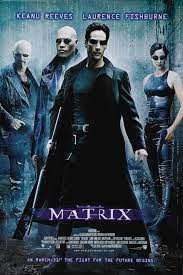

The Matrix é um filme de ficção científica e ação dirigido pelas irmãs Lilly e Lana Wachowski e lançado em
1999. A obra se tornou um ícone dentro do mundo cyberpunk, subgênero de ficção científica que se caracteriza
pelo avanço da tecnologia e a precariedade da vida.
O longa-metragem originou uma franquia de grande sucesso; inicialmente, tratava-se de uma trilogia composta
por The Matrix (1999), Matrix Reloaded (2003) e Matrix Revolutions (2003).
Matrix(1999)

Sinopse: O jovem programador Thomas Anderson é atormentado por estranhos pesadelos
em que está sempre conectado por cabos a um imenso sistema de computadores do futuro. À medida que o sonho
se repete, ele começa a desconfiar da realidade. Thomas conhece os misteriosos Morpheus e Trinity e descobre
que é vítima de um sistema inteligente e artificial chamado Matrix, que manipula a mente das pessoas e cria
a ilusão de um mundo real enquanto usa os cérebros e corpos dos indivíduos para produzir energia.
Descrição:Lançado em 1999, é o primeiro filme da trilogia principal, que apresenta os personagens
principais: Neo, um hacker que é recrutado por Morpheus, um líder rebelde que acredita que Neo é o escolhido
para salvar a humanidade; Trinity, uma guerreira e parceira de Morpheus; e os agentes, programas de
computador que tentam impedir os rebeldes de escapar da Matrix
Sinopse: Após derrotar as máquinas em seu combate inicial, Neo ainda vive na
Nabucodonosor ao lado de Morpheus, Trinity e Link, o novo tripulante da nave. As máquinas estão realizando
uma grande ofensiva contra Zion, onde 250 mil delas escavam rumo à cidade e podem alcançá-la em poucos dias.
A Nabucodonosor é convocada para retornar a Zion e participar da reunião que definirá o contra-ataque para
salvar a humanidade da extinção. Entretanto, um recado enviado pelo Oráculo faz com que Neo retorne à
Matrix.
Descrição:Lançado em 2003 é o segundo filme da trilogia principal, que expande o universo da saga e introduz
novos personagens, como o Oráculo, uma entidade misteriosa que prevê o futuro; o Arquiteto, o criador da
Matrix; e Niobe, uma capitã rebelde.
Sinopse: Após enfrentar os sentinelas no mundo real, Neo tem sua mente presa entre
a Matrix
e a realidade, de onde só poderá sair com a ajuda de Trainman. Trinity e Morpheus buscam a ajuda da Oráculo
e Seraph. Após obterem sucesso no resgate, o trio se divide em duas missões: enquanto Morpheus e a
tripulação de duas naves partem rumo a Zion, Neo e Trinity se dirigem à cidadela das máquinas.
Descrição: Lançado em 2003 é o terceiro e último filme da trilogia principal, que conclui a história de Neo
e seus companheiros.
Sinopse: Se passando 20 anos após os acontecimentos de de Matrix Revolutions, Neo
vive uma vida aparentemente comum sob sua identidade original como Thomas A. Anderson em São Francisco,
Califórnia, com um terapeuta que lhe prescreve pílulas azuis para neutralizar as coisas estranhas e não
naturais que ele ocasionalmente vislumbra em sua mente. Ele também conhece uma mulher que parece ser Trinity
(Carrie Anne-Moss), mas nenhum deles se reconhece. No entanto, quando uma nova versão de Morpheus oferece a
ele a pílula vermelha e reabre sua mente para o mundo da Matrix, que se tornou mais seguro e perigoso nos
anos desde a infecção de Smith, Neo volta a se juntar a um grupo de rebeldes para lutar contra um novo e
maois perigoso inimigo e livrar todos da Matrix novamente
Descrição: Matrix Resurrections é um filme de ação e ficção científica que continua a história de Neo, o
escolhido que pode manipular a realidade virtual da Matrix e libertar a humanidade da escravidão das
máquinas. O filme se passa 20 anos após os eventos de Matrix Revolutions, quando Neo sacrificou sua vida
para acabar com a guerra entre humanos e máquinas. Agora, Neo vive uma vida normal como Thomas Anderson, um
programador de videogames que sofre de estranhos pesadelos e visões
.jpg)
.jpg)
.jpg)